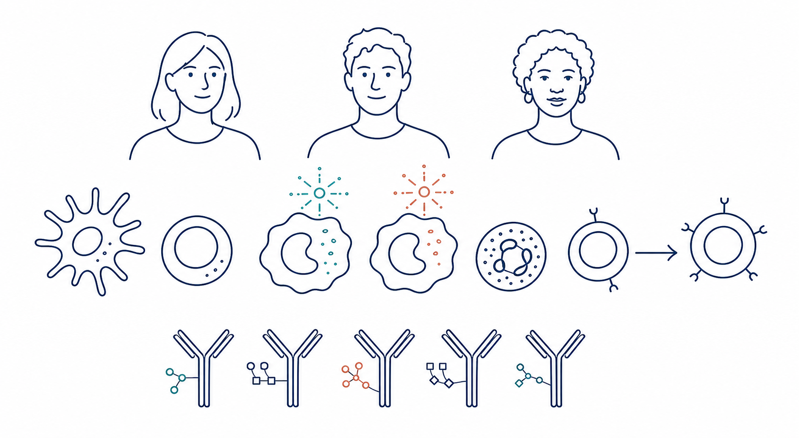
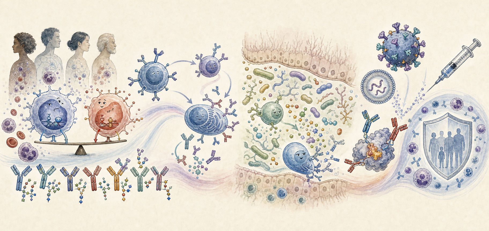
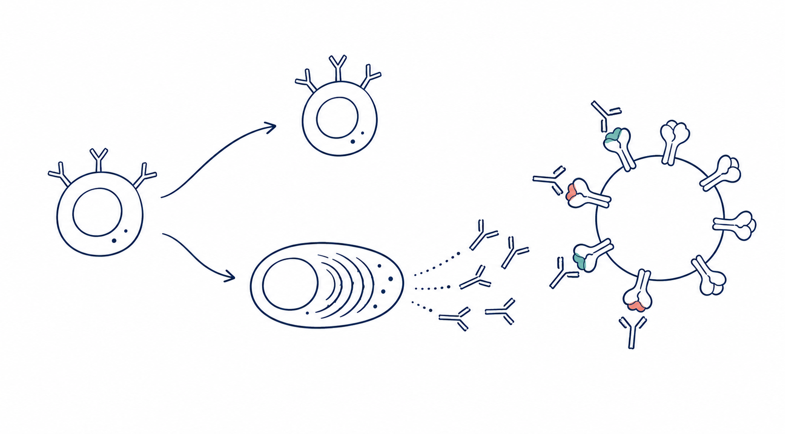
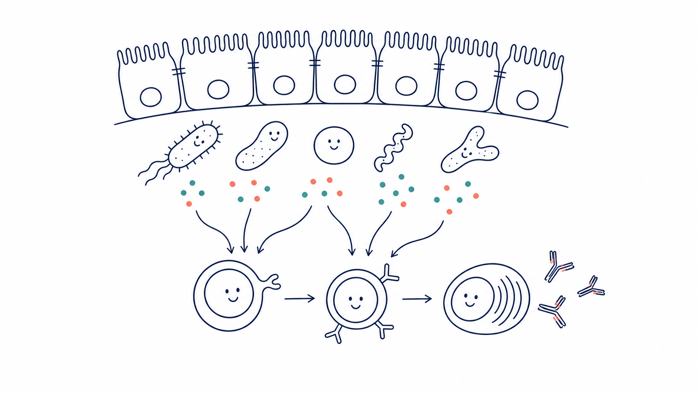
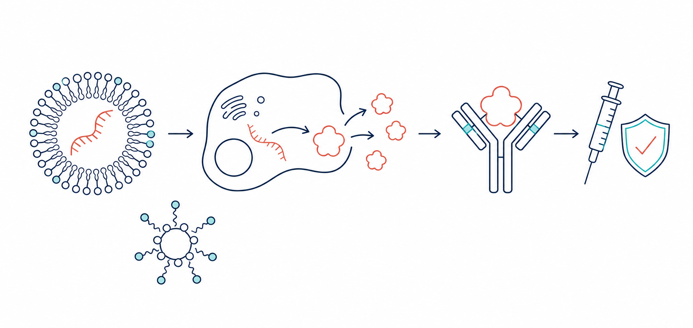

01
应答发生之前
免疫基态与应答轨迹
我们解析疫苗接种或感染前已经存在的免疫状态，并研究其如何塑造后续免疫过程。目前重点关注单核细胞中干扰素相关程序与促炎程序之间的平衡，包括 IRF 与 AP-1 调控轴，以及这些程序如何影响 T 细胞启动及功能命运。我们还系统解析人体总免疫球蛋白的糖基化谱，将其作为反映免疫状态与免疫调控的整体性指标。
- 个体免疫基态差异
- 人体总免疫球蛋白糖基化
- 先天免疫与适应性免疫的耦联
- 免疫应答预测标志物

我们的科学研究
为什么不同个体面对相同的生物学挑战会产生不同的免疫反应？我们研究既有免疫状态如何与疫苗、感染及其他扰动相互作用，进而塑造人类免疫反应的强度、质量、广度和持久性。

核心科学问题
我们将挑战发生前的免疫状态与随后展开的细胞应答轨迹联系起来，从群体平均走向具有机制基础的个体化人类免疫模型。
研究方向
应答发生之前
我们解析疫苗接种或感染前已经存在的免疫状态，并研究其如何塑造后续免疫过程。目前重点关注单核细胞中干扰素相关程序与促炎程序之间的平衡，包括 IRF 与 AP-1 调控轴，以及这些程序如何影响 T 细胞启动及功能命运。我们还系统解析人体总免疫球蛋白的糖基化谱，将其作为反映免疫状态与免疫调控的整体性指标。

让保护更加持久
我们研究早期免疫激活如何塑造记忆 B 细胞、长寿命浆细胞及中和抗体谱系的演化，旨在揭示抗体应答获得持久性、广谱性和保护力的细胞规律。

宿主内环境
我们研究肠道微生物组及其代谢产物如何校准免疫稳态和疫苗应答。通过前瞻性人体干预、多组学分析与功能实验，我们探索微生物群落、代谢信号、T 细胞辅助功能和抗体生成之间的因果联系。

从机制走向设计
我们将免疫机制转化为更优的疫苗与抗体策略，研究抗原结构、佐剂、免疫程序与递送系统（包括纳米颗粒和 LNP–mRNA 平台）如何重塑感染性疾病及肿瘤中的免疫应答轨迹。该方向还包括基于 mRNA 的 PD 疫苗以及抗体发现与开发。

研究方法
纵向人体队列与精确时间点的生物样本。
单细胞多组学、蛋白质组学、免疫表型与抗体分析。
计算整合免疫基态与应答轨迹。
功能扰动、实验模型与因果验证。
我们的目标
发现个体免疫函数：建立一张具有机制基础的图谱，连接一个人的免疫学特征、其面对的生物学挑战，以及免疫系统将如何作出反应。